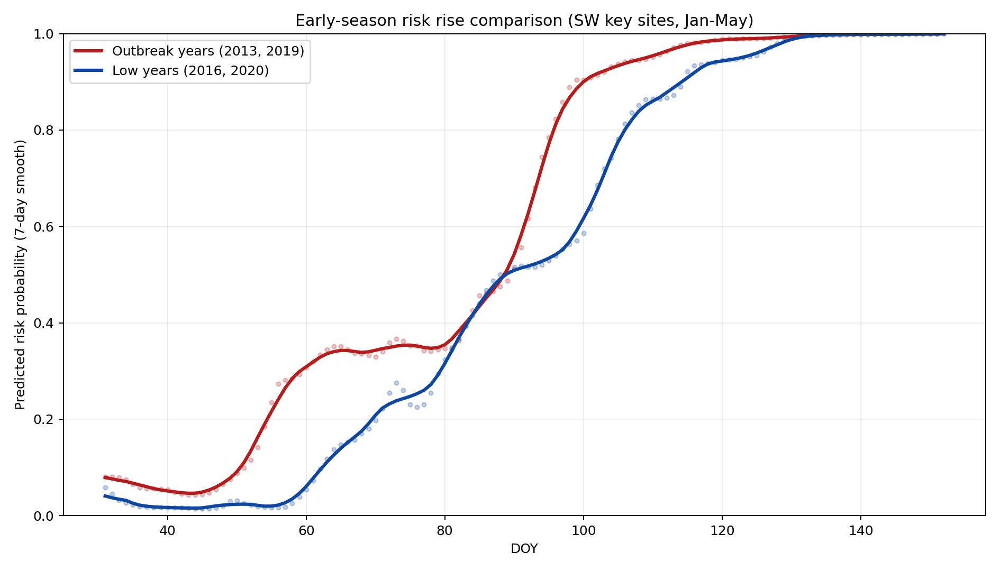
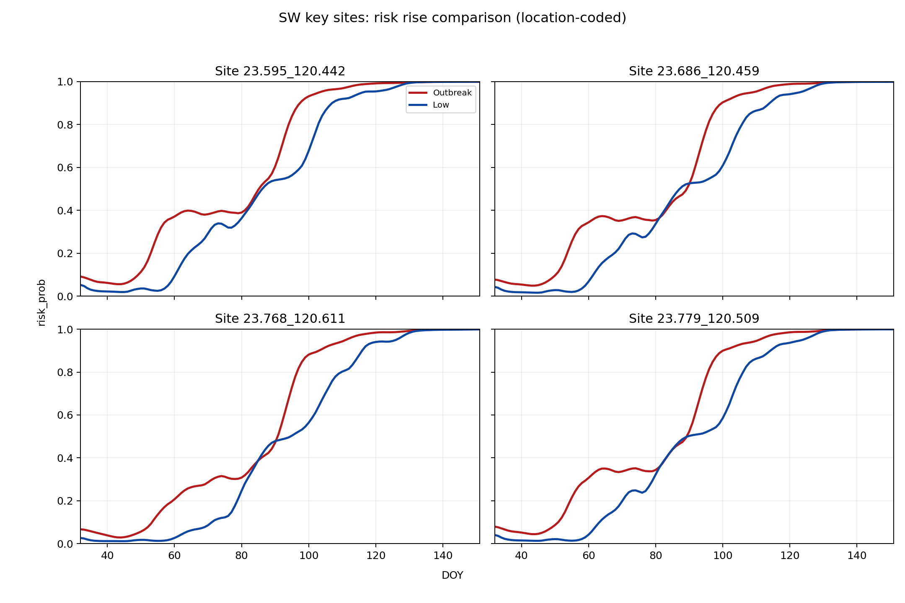
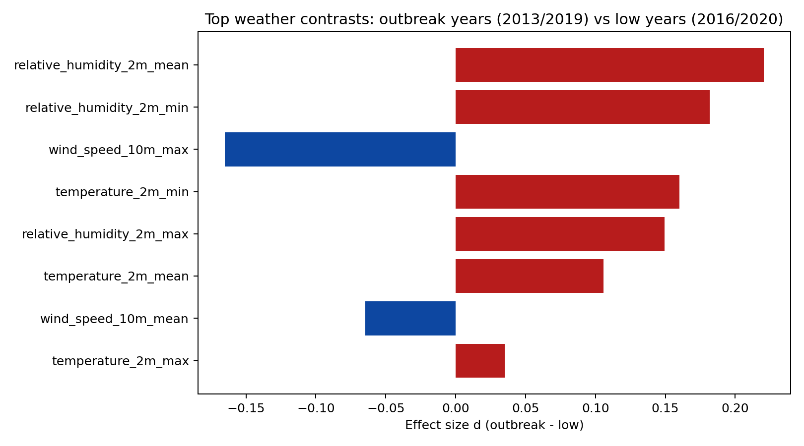
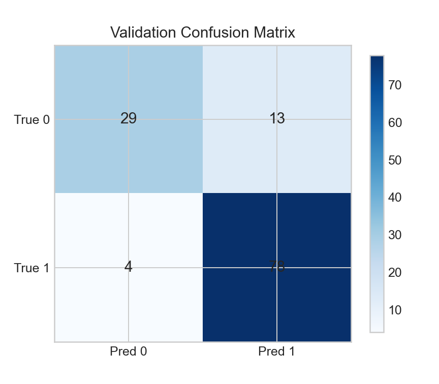

台灣稻熱病預測模型結案包
定版日期：2026-03-08｜用途：部署交接、後續維運、給 ChatGPT/Codex 快速接手
1. 結案交付內容
- 模型：
../model/final_model.pt
- Metadata：
../model/model_metadata.json
- 證據資料：
../evidence/*.csv
- 結案清單：
../CLOSEOUT_MANIFEST.json
2. 流程摘要（到訓練定版）
- 調查資料清理與標註（class 0/1）
- 氣象資料對齊與特徵打包
- 模型搜尋（GRU/BiGRU/LSTM/TCN + Attention）
- 以 MCC 為主選定 TCN+Attention 作為主模型
3. 模型重點說明（部署端）
- 任務：稻熱病二元風險預測（發生/不發生）。
- 輸入視窗：監測日前 -30 至 -3 天，共 28 time steps。
- 特徵數：10（溫度、濕度、風速、降雨）。
- 輸出：
risk_prob，並以 threshold=0.23 產生 class。
- 業務偏好：接受較高 FPR 以降低 FNR（漏報風險）。
4. 高低發年固定比較（2013/2019 vs 2016/2020）
此區展示西南部關鍵田區的年初風險起升與氣象差異，作為風險營運判讀輔助。




5. 一致性重跑範例（2008/08/16-2009/09/13）
- 用途：讓人員與 Codex 在新環境可重跑下載與預測流程，逐步比對是否一致。
- 下載來源：Open-Meteo Archive API（固定時間區間與座標）。
- 流程：下載日資料 -> 前處理/標準化 -> 28-step 視窗 -> 模型推論 -> 門檻分類。
- 文件：
REPLAY_20080816_20090913.md
- 範例輸入：
../evidence/replay_example_input_weather.csv
- 範例輸出：
../evidence/replay_example_output_prediction.csv
6. 對 ChatGPT/Codex 的接手指引
- 先讀：
../CLOSEOUT_MANIFEST.json
- 再讀：
../model/model_metadata.json 取得模型契約
- 部署前檢查：
DEPLOYMENT_QUICKSTART.md
- 重跑比對：
REPLAY_20080816_20090913.md